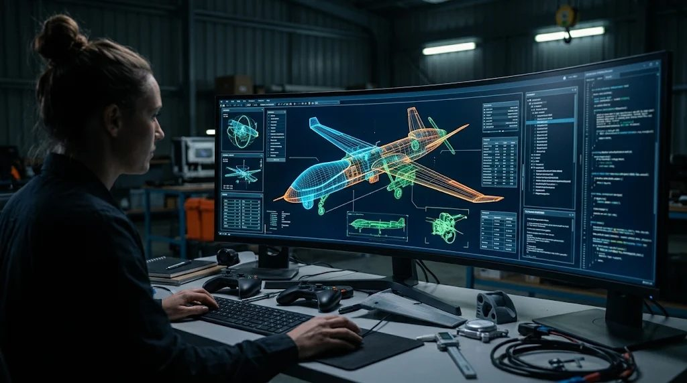
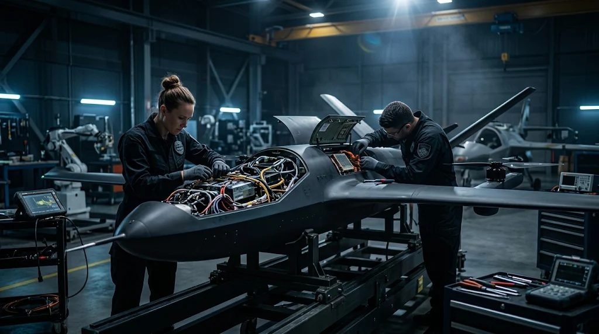
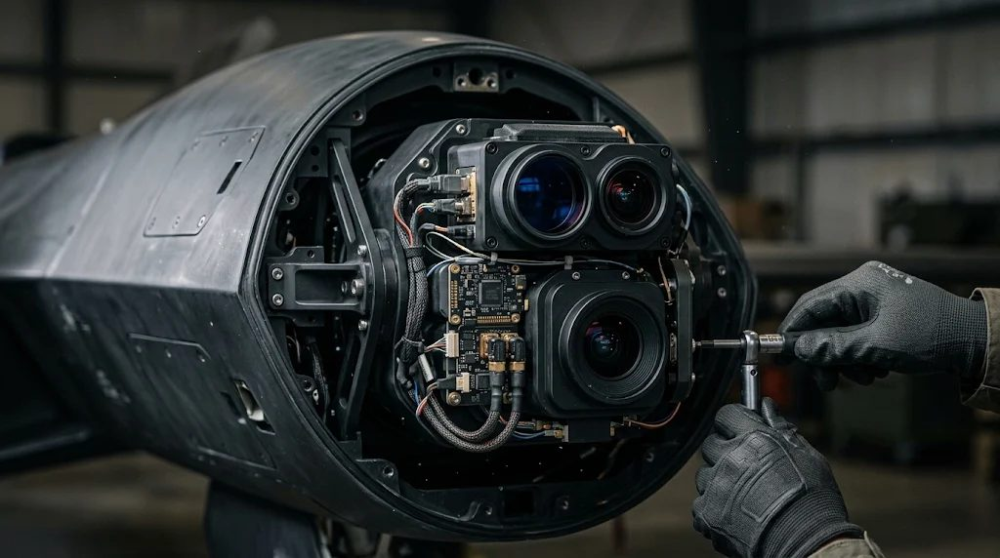
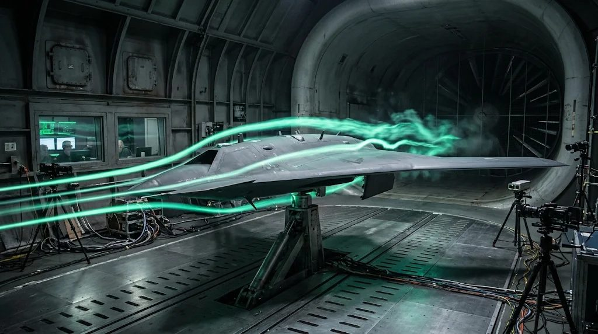
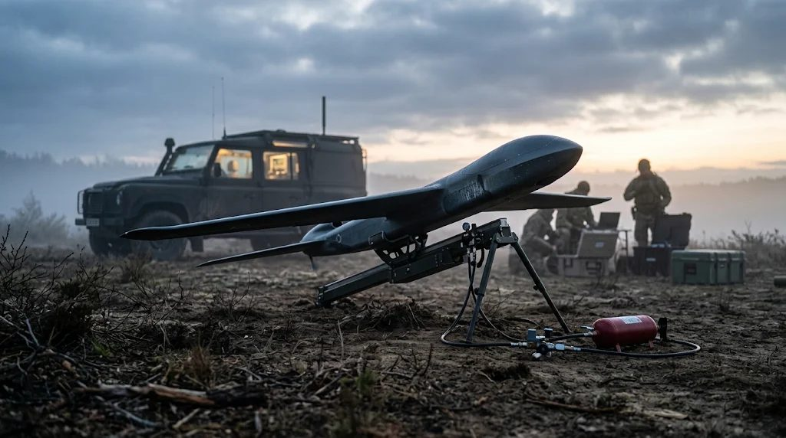
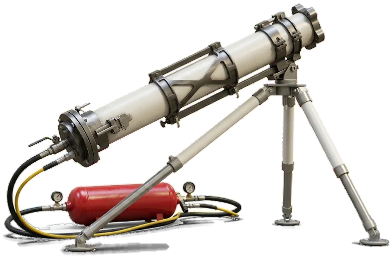
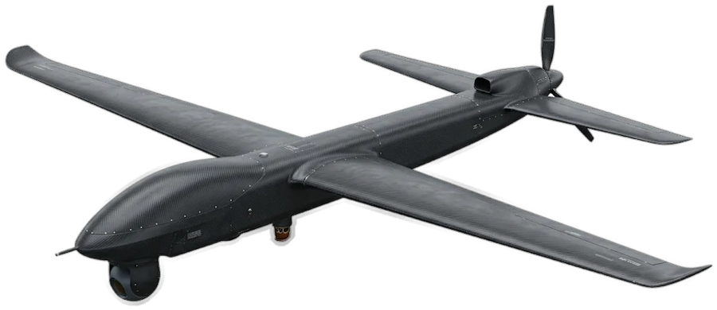
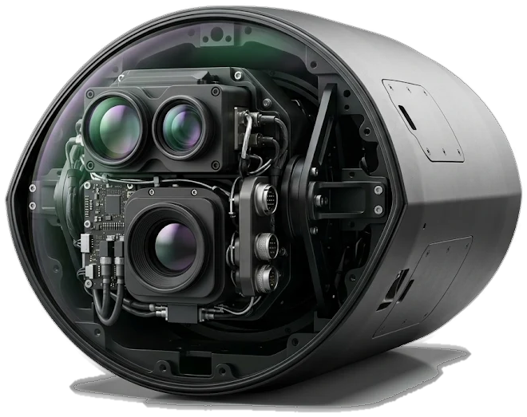
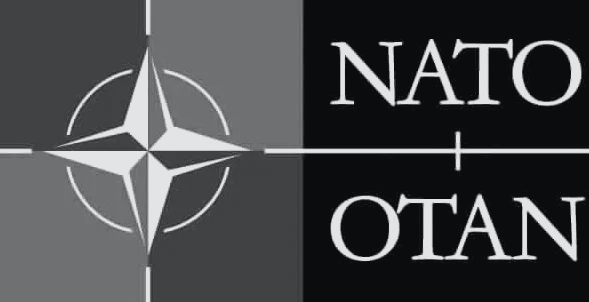
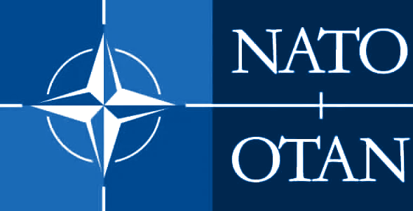

UAV Engineering & Integration
Custom design and avionics integration for compact and long endurance unmanned platforms.
- Airframe design
- Avionics
- Rapid prototyping
Engineering the next generation of unmanned flight.
Custom design and avionics integration for compact and long endurance unmanned platforms.
RGB, thermal and multispectral fusion for high precision 3D mapping and infrastructure inspection.
Aerial data for crop monitoring, precision spraying support and soil diagnostics.
Resilient flight systems for national security, emergency medical supply and harsh environments.
Long endurance reconnaissance with low radar signature.
Lightweight composite airframe engineered for extended unmanned surveillance missions. Features modular payload bays and optimized aerodynamics for maximum time on station without continuous human input.
View systemZero runway autonomous launches in challenging tactical environments.
A highly portable system utilizing a 160mm smooth bore barrel and a 12L high pressure accumulator tank to deliver instantaneous ejection velocity, enabling independent field operations.
View systemModular, heavy duty EV chassis for tactical off road intercept.
An autonomous ground platform featuring a low profile composite aero shell to minimize drag. Integrated with multispectral camouflage and heavy duty suspension for off road endurance and low detectability.
View systemOff road tactical trailer with multi cell interceptor pod.
A fully mobile, rapid response unit equipped with hydraulic stabilization. Stores and salvo fires multiple interceptor drones simultaneously with pneumatic assisted boost for immediate, autonomous threat neutralization.
View systemRequirements definition, system architecture and engineering design around your mission.
Fast prototype builds and iterations of airframe, propulsion and avionics.
Avionics, payloads and multisensor suites joined into one flight ready platform.
Aerodynamic analysis and technical testing to verify performance against the brief.
System delivery, operational handover, and fielding the platform for active tactical operations.





Every Aeroteque platform is engineered around one goal: putting capable, autonomous aircraft in the air faster than a threat can move. Four design decisions set our systems apart, from the first launch to the last mile of the mission.

Ready to operate in under 5 minutes, with self launch and zero runway capability in the harshest tactical environments.

Lightweight composite airframes built to stay aloft for long flights while holding a low radar signature that is hard to detect.

Modular payload bays and chassis allow fast swaps between surveillance cameras, LiDAR sensors and multiple interceptor systems.
Advanced autonomous guidance runs the entire mission cycle, from takeoff and navigation to independent threat neutralization.
Aeroteque works inside the regulatory frameworks of the institutions below, so customers can integrate, export and deploy with confidence from the first conversation.

